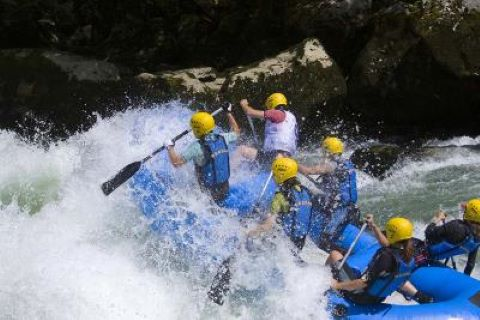
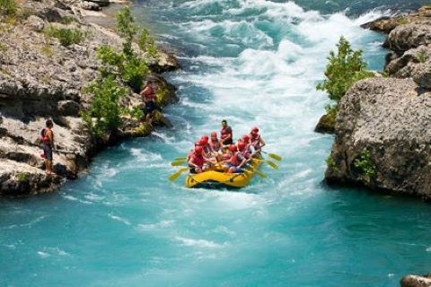
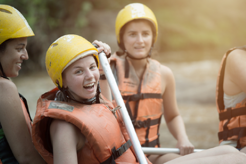
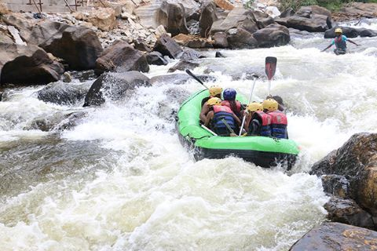
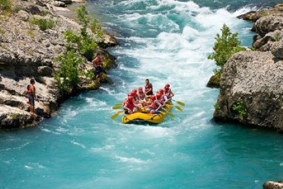
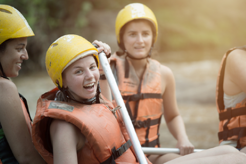
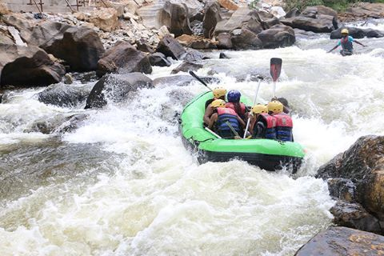

White Water Rafting
The White Water Rafting Company is a Modern Rafting Company with its purpose to ensure people all over the world are connected through the Rafting Game.
History
The White Water Company was born in 1952 by Lansana Jusu. He is highly known for his famous book titled "THE TIME IS NOW". Lansana Jusu was a sailor, psychologist, businessman, and software engineer. Lansana Jusu grew up in a riverline community with just about 2,000 residents along a 70km stretch coastal plain. Education was not seen as feasible because there were no schools available in the entire community. His father was a fisherman and his mother a farmer. Lansana usually went out with his dad on his dad's fishing trips and on weekends he goes to his mother's farmland to work. On one fatal day with his father on a fishing trip, they accidentally lost their way home after an exhausting day's work. The sea was rough and scary, the atmosphere was dark and worrisome, which caused their boat to sail to a nearby island far away from home. During their stay on the island, Jusu enjoyed the beauty of nature so much that he desired to explore it. After 2 weeks on the island, they finally got a rescue from a ship that came nearby. Whilst on the ship getting home, he inquired of the sailor that he should help him explore the nature of the sea, which the sailor Michael Degot Lawson accepted. Lansana later spoke to his dad about his quest but his dad was not well pleased with the idea. However, after the sailor spoke to him to let his son do his exploration, he didn't decline. Lansana left his home and traveled with Michael to a faraway land staying along the beach area in Freetown. There he was trained as a sailor and a diver. He developed so much love for rafting, especially along the Atlantic coast of Freetown, that he decided to form a rafting club. In 1980, he traveled to the United States after winning a state lottery DV. In the United States, he earned a Bachelor's degree in Software Development and a Master's degree in Computer Science. In 1988, he opened a Playstation business and a Physiotherapy unit in Las Vegas. In 1990, he traveled to Miami where he established the famous Miami Beach in 1992. After years of working, he established the White Water Rafting Company on September 27, 1998. He established this company in a bid to enable worldwide connectivity and provide safety for lovers of rafting all over the world.
Adventure Awaits You!
 




